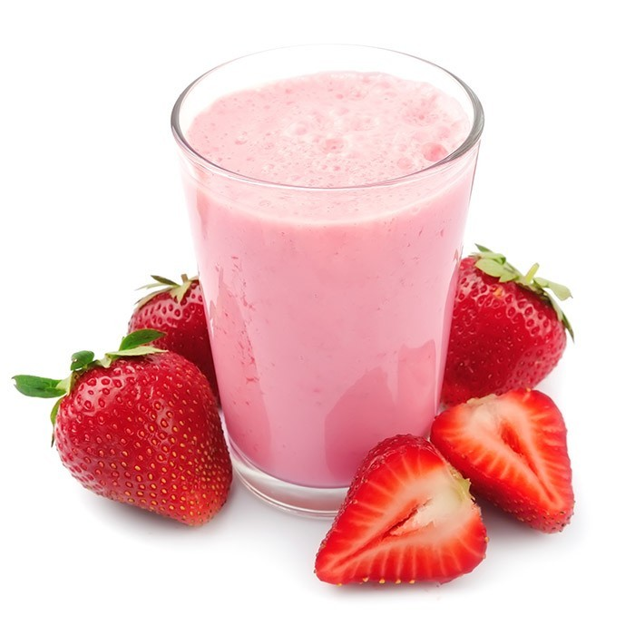
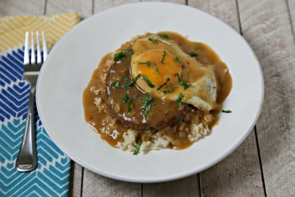
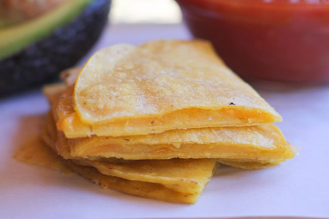

Strawberry Milk
Ingredients
- 1 cup strawberries
- 3 tbs sugar
- 2 cups milk
Instructions
- Mush strawberries and sugar in saucepan.
- Bring to simmer over medium heat. Stir consistently.
- Cool strawberry syrup
- Pour syrup and chilled milk into glass. Enjoy!

Back to top.
Veggie Loco Moco
Ingredients
- 1 Veggie Patty
- Some tasty brown gravy
- Some cooked brown rice
- 1 Egg
Instructions
- Fry veggie patty until cooked to your liking. I like mine pretty crispy.
- Fry egg to desired done-ness.
- Heat up that instant Costco gravy.
- In an eating bowl, layer rice, patty, egg, then gravy. Stuff your gob and enjoy your 7th rewatch of The Office.

Back to top.
Crispy Quesadilla
Ingredients
- A single corn tortilla
- Some shredded cheese
Instructions
- Lightly oil pan. Warm torilla over medium-high heat. Flip when soft and floppy.
- Sprinkle that delicious shredded cheese on half of the tortilla.
- Fold tortilla, lifting the non-cheese side.
- Cook until crispy.
- Flip. Cook until crispy.
- Cool. Enjoy.

Back to top.